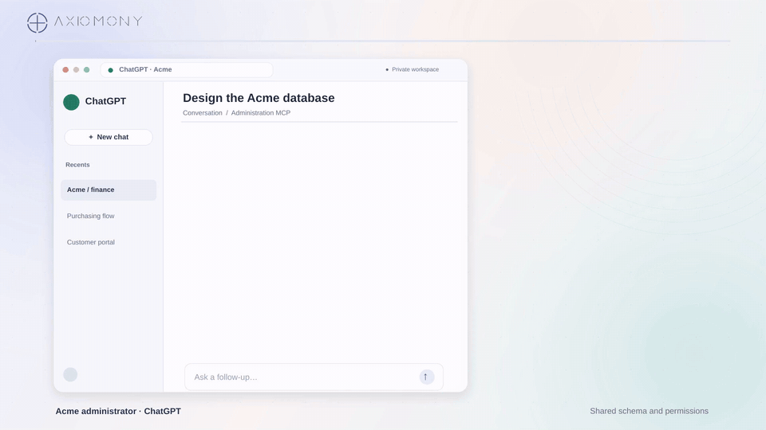

Conventional business applications bundle a data model with prescribed screens, flows and policies. Even a configurable product carries the vendor's design decisions. Axiomony separates the long-lived agreements of an organization from the short-lived interfaces people use to do their work.
Standardize the data and the rules, not the user interface.
The principle
An administrator can describe the business to an AI assistant. Axiomony helps turn that description into PostgreSQL tables, relationships and enforceable rules. Authorized administrators can inspect and approve the proposed changes. Axiomony translates these requests into real database objects—rather than storing parallel business rules in a separate application layer.
Once the shared model exists, an accountant, purchaser or sales representative can use their preferred tools and user experience. They don't need a common interface; they need common data and consistent permissions.
- One governed data modelTables, relationships and business constraints stay together in the database.
- Permissions enforced at the sourceThe database determines what each signed-in principal may read or change, regardless of which app asks.
- No duplicated business-rules middlewareApplications do not need to reimplement approval conditions or authorization policies to preserve the organization's rules.
- Independent user experiencesEach department can build a phone form, a specialized dashboard or an integration using the same data contracts.
Three ways to work with one database
Axiomony distinguishes changes to the organization's shared model from ordinary work with its records.
The database enforces access rights and business rules whichever interface is used.
Administration MCP accepts natural-language requests for changes to schema, roles and rules, prepares a proposed migration using an internal AI model, and requires explicit administrator approval.
Data MCP offers predictable, permission-aware tools to inspect and change records. It uses the authenticated database user's own credentials. The database remains authoritative if an application behaves incorrectly.
An example: ACME
ACME begins by defining customers, suppliers, products, purchases, sales, invoices and payments. It adds an approval threshold and grants each role only the appropriate permissions. Purchasing can then make a phone-friendly invoice form; Sales can create a pipeline view; Finance can organize payment reconciliation—all against the same data and constraints.

Security boundaries and current implementation
The current implementation uses PostgreSQL grants, row-level security, constraints and triggers. Axiomony exposes these capabilities through a Node.js MCP server. The server currently uses per-user database credentials over HTTP Basic. Do not expose that endpoint directly to the internet.
Data permissions do not make stolen credentials harmless, and they do not replace secure handling of API keys or external integrations. A browser-based application also needs a trusted MCP runtime or authenticated server-side session rather than embedding credentials in JavaScript. Read the architecture and security considerations for details.